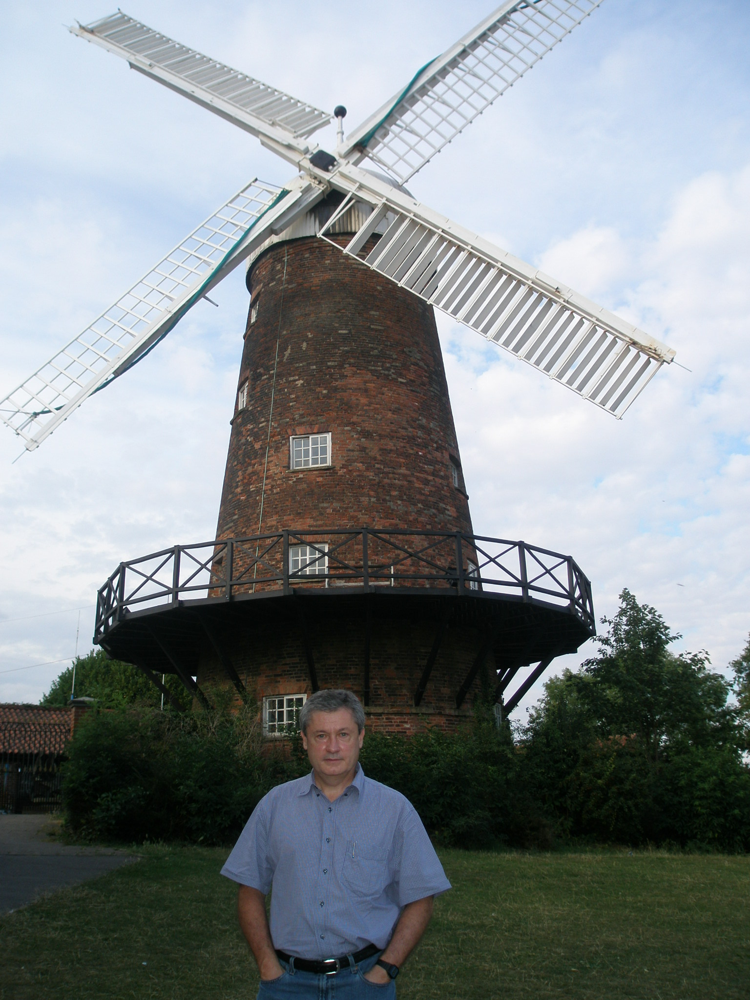
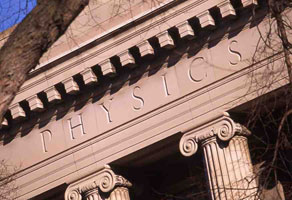

Jorge Viñals Professor of Physics Director of Graduate Studies
University Address Tate Hall 130-17 School of Physics and Astronomy (map) (webcam) University of Minnesota 116 Church St. S.E. Minneapolis, MN 55455 (612) 624-9074
Tate Hall 130-17 School of Physics and Astronomy (map) (webcam) University of Minnesota 116 Church St. S.E. Minneapolis, MN 55455 (612) 624-9074

